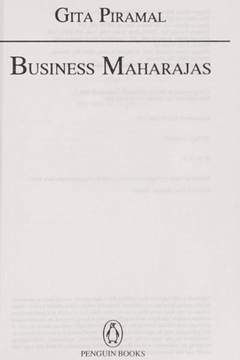

Library › Business & Startups
Business Maharajas — Summary & Key Lessons

India's greatest founders — their psychology decoded.
📖 OPEN THE FULL INTERACTIVE BREAKDOWN →🌐 Read it in Hindi, Hinglish, Gujarati, Tamil & 22 more languages — free, with audio.
💡 The Big Idea
Gita Piramal profiles India's greatest business leaders — from J.R.D. Tata and Dhirubhai Ambani to Aditya Birla and Rahul Bajaj — and distils what made them 'maharajas' of industry. The book is a gallery of founder psychology: audacity, risk appetite, obsessive attention to detail, and the capacity to see opportunity where others saw obstacles. Piramal's central finding: there is no single formula for greatness — each maharaja was built differently — but they shared a refusal to accept the given limits of their world. The book is a study in how Indian industry was built by personalities as much as by policies.
🧠 The 6 Key Lessons
Lesson 1: The Founder's Gaze: Seeing Opportunity in Obstacles
Part 1: The Visionaries
Piramal's maharajas consistently saw what others called impossible as merely difficult. Dhirubhai Ambani built a polyester plant against every bureaucratic barrier; J.R.D. Tata launched aviation and software ahead of their markets. The lesson: the founder's first skill is reinterpretation — turning 'it can't be done' into 'it hasn't been done here'. The person who accepts the given limits inherits the given results; the one who questions them finds the gaps. The gaze is trainable: every obstacle is a prompt to ask 'what would it take?' — and then price that answer.
📖 Example: Dhirubhai's polyester foray required outmaneuvering entrenched competitors and regulators — he treated each barrier as a puzzle to solve, not a wall to accept. The 'impossible' plant became the foundation of Reliance. Read the full example →
⚡ Do this: Take one 'impossible' in your field and ask: 'What would it actually take?' Write the answer as a plan, not an objection.
Lesson 2: The Risk Appetite: Calculated Bets, Not Gambles
Part 2: The Risks
Piramal's subjects were famous risk-takers — but the book shows their risks were calculated: enormous bets built on deep study, alliances and contingency planning. Dhirubhai's risks were backed by obsessive market intelligence; Tata's by long research horizons. The lesson: the appearance of recklessness in great founders is usually the surface of deep preparation. The difference between a bet and a gamble is homework. Before any big risk: study the field cold, line up the fallback, size the downside. Then bet as if it were certain — because the preparation is what makes it so.
📖 Example: Every 'wild' Ambani move was preceded by months of intelligence-gathering on markets, competitors and regulators — the audacity was the visible tip of an invisible iceberg of analysis. Read the full example →
⚡ Do this: For your next big bet, write three lines: what you know cold, who's with you, your worst case. Only then decide — a prepared bet, not a gamble.
Lesson 3: Attention to Detail: The Maharaja's Obsession
Part 3: The Obsession
Piramal repeatedly shows her subjects' almost painful attention to detail — Dhirubhai knowing production numbers by heart, J.R.D. personally inspecting planes, Aditya Birla reviewing every rupee. The lesson: grand vision is executed in small details, and the leader who knows the details can't be fooled. The person who delegates everything — including understanding — becomes a figurehead, not a leader. The sustainable leader knows the numbers, the product and the people well enough to question every report. The obsession is not micromanagement; it is the refusal to be managed by your own organization.
📖 Example: Dhirubhai's legendary grip on his businesses came from personally knowing numbers that subordinates assumed he'd delegated — the knowledge was the power that kept his empire coherent. Read the full example →
⚡ Do this: Re-learn one 'delegated detail' this week — the actual numbers, the real process, the front-line reality. The detail is the anti-fooling device.
Lesson 4: The Family Succession: Building Beyond the Founder
Part 4: The Successors
Piramal's later chapters examine succession — the founders who groomed successors (Aditya Birla's careful preparation) versus those who left power vacuums (the splits that followed several empires). The lesson: the founder's final duty is the transition — building leaders who can run the machine without them. The person who builds only their own indispensability builds a cliff; the one who builds successors builds a slope. The practical work: delegate authority gradually, document the thinking, and mentor the next generation before the market forces the transition. Succession is the last and hardest creation.
📖 Example: Aditya Birla's grooming of lieutenants and systems allowed his empire to continue after his sudden death — the preparation outlived the founder, which is the definition of succession done right. Read the full example →
⚡ Do this: Identify your 'successor' — the person who could run your key responsibility. Start delegating one meaningful piece to them this quarter, with full authority.
Lesson 5: The Licence Raj Warrior: Building Within Constraints
Part 5: The Constraints
The maharajas built their empires under the Licence Raj — a system designed to restrict exactly what they did. Piramal's lesson: constraint is a filter that rewards the resourceful. The founders who thrived treated regulation as a field of play to be mastered, not a wall to be cursed — learning the rules better than the regulators did. The modern translation: every system has constraints, and the person who masters the constraints (the rules, the incentives, the loopholes that serve customers) gains leverage over the person who only complains about them. Master the game you're in before wishing for another one.
📖 Example: Under a system that capped production, the cleverest maharajas built capabilities — relationships, technology, distribution — that exploded the moment liberalization arrived. The constraint had forced the preparation. Read the full example →
⚡ Do this: List the top three constraints in your environment. For each, write one way to master it (learn the rules, build the capability, find the legitimate edge) instead of complaining about it.
Lesson 6: The Maharaja's Psychology: Self-Belief as Infrastructure
Part 6: The Mind
Piramal's closing portrait: the shared inner quality of her subjects was a self-belief so deep it functioned as infrastructure — they genuinely believed they would prevail, and the belief shaped the decisions, the teams and the outcomes. The lesson: self-belief is not arrogance; it is an operating assumption that unlocks risk, persistence and leadership. The person who believes they can figure it out tries, learns and compounds; the one who doubts pre-emptively stops. The practical route: build belief through evidence — small wins, documented capability, honest self-review. Belief is not given; it is constructed, brick by brick, from results.
📖 Example: Every maharaja faced moments that justified quitting — and each found a reserve of belief that turned the crisis into a chapter. The belief wasn't delusion; it was built on a lifetime of solving the unsolvable. Read the full example →
⚡ Do this: Build your belief file: document three past wins where you solved what seemed impossible. Re-read it before your next big challenge — the evidence is the belief.
✅ 5-Step Action Plan
- Turn one 'impossible' into a plan this week.
- Write the preparation behind your next big bet before making it.
- Re-learn one delegated detail — the numbers, the process, the reality.
- Start grooming your successor with one delegated authority.
- Build your belief file from three documented wins.
💬 Best Quotes from Business Maharajas
- “The founder's first skill is reinterpretation — turning 'impossible' into 'not done here yet'.”
- “Every great risk was a bet built on homework.”
- “The founder's final duty is the transition — build successors, not cliffs.”
Interactive version: mark lessons as read, listen in your language, share quote cards.